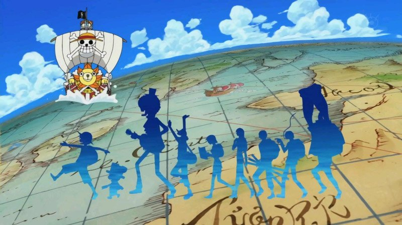

GIỚI THIỆU ONE PIECE
One Piece (ワンピース )
Là một bộ shounen manga của tác giả Eiichiro Oda được phát hành định kỳ bởi tạp chí Weekly Shonen Jump, ra mắt lần đầu ngày 4 tháng 8 năm 1997 trên ấn bản số 34. Bản của tankobon truyện được xuất bản bởi NXB Shueisha với tập đầu tiên phát hành ngày 24 tháng 12 năm 1997. Đến tháng 6/2009 One Piece có tổng cộng 54 tập. Câu chuyện là một cuộc hành trình của ước mơ và niềm tin, đi tìm kho báu hải tặc lớn nhất "One Piece" cũng như thực hiện ước mơ cho riêng mỗi người của nhóm hải tặc Mũ Rơm. Hành trình bắt đầu từ Monkey D. Luffy, một cậu bé 17 tuổi, với ước mơ trở thành vua hải tặc và tìm ra One Piece. Khi viết bộ truyện này, Oda đã bị ảnh hưởng lớn từ Dragon Ball.Bộ truyện đã được chuyển thể thành original video animation (OVA) sản xuất năm 1998 bởi Production I.G.sau đó được chuyển thể thành một bộ anime (hoạt hình Nhật) hoàn chỉnh bởi Toei Animation, phát sóng trên đài Fuji Television ở Nhật vào ngày 20 tháng 10 năm 1999. Đến ngày 16 tháng 5 năm 2009, có tổng cộng 401 tập được phát sóng. Ngoài bộ anime và OVA, One Piece còn được Toei chuyển thể thành mười bộ phim, và hàng loạt trò chơi dựa vào bộ truyện này cũng đã được phát hành.
Với hơn 158 triệu bản in được bán, One Piece là manga có số lượng bán ra cao nhất trong lịch sử Weekly Shonen Jumpg. Nó được coi là bộ truyện được yêu thích nhất và có số lượng bán ra cao nhất trong mọi thời đại ở Nhật. Tại Việt Nam, One Piece đã được NXB Kim Đồng mua bản quyền và phát hành tập 1 vào ngày 12/12/2008.

Cốt truyện
Một cậu bé tên Monkey D. Luffy, được khuyến khích bởi người anh hùng thuở nhỏ Shanks "Tóc đỏ", giong buồm ra khơi trên chuyến hành trình tìm kho báu huyền thoại One Piece và trở thành Vua hải tặc. Để làm được điều này, cậu phải đến được tận cùng của vùng biển nguy hiểm và chết chóc nhất thế giới:Grand Line (Đại Hải Trình).
Luffy lãnh đạo nhóm hải tặc Mũ Rơm qua East Blue (Biển Đông) và rồi tiến đến Grand Line. Cậu theo dấu chân của vị vua hải tặc quá cố, Gol D. Roger, chu du từ đảo này sang đảo khác để đến với kho báu vĩ đại One Piece. Mỗi thành viên trong nhóm đều có 1 quá khứ rất đặc biệt và đáng buồn. Ngoài khả năng đặc biệt trong công việc của mình, bất cứ thành viên nào cũng có khả năng chiến đấu rất tốt.

Cho đến nay, thủy thủ đoàn chính thức của băng Mũ Rơm gồm 10 người:
• Thuyền trưởng Monkey D. Luffy.
• Kiếm sĩ Roronoa Zoro.
• Hoa tiêu Nami.
• Xạ thủ Usopp (Sogeking).
• Đầu bếp Sanji.
• Bác sĩ Tony Tony Chopper.
• Nhà khảo cổ Nico Robin.
• Thợ đóng thuyền Franky.
• Nhạc công Brook.
• Người cá Jinbe.
Trong suốt câu chuyện, họ chiến đấu với cả những băng hải tặc xấu xa khác và Hải quân. Hải quân là thuộc cấp của Chính phủ thế giới, những kẻ tìm kiếm công lý qua việc chấm dứt Đại kỉ nguyên Hải tặc. Nhiều chi tiết bối cảnh trong truyện nói về sự cân bằng quyền lực mỏng manh giữa Chính phủ thế giới và những băng hải tặc hùng mạnh nhất thế giới.
Bối cảnh
Thế giới hư cấu của One Piece được bao bọc bởi hai đại dương lớn, được phân cách bởi một dãy núi khổng lồ được gọi là Red Line (レツドライン, Vạch đỏ). Grand Line (偉大なる航路, Đại Hải Trình), một vùng biển chạy vuông góc với Red Line, chia chúng ra thành bốn biển: North Blue (Biển Bắc), East Blue (Biển Đông), West Blue (Biển Tây) và South Blue (Biển Nam). Bao quanh Grand Line là hai vùng nước gọi là Calm Belt (カームベルト), một nơi không hề có bất cứ luồng gió cũng như dòng hải lưu nào, và là ổ sinh trưởng của những quái vật biển khổng lồ gọi là Hải Vương. Chúng đóng vai trò rất hữu hiệu trong việc làm rào chắn ngăn những kẻ muốn vào Grand Line. Tuy tàu hải quân có thể đi qua chúng nhờ sử dụng đá biển để ẩn sự có mặt của họ, hầu hết phải sử dụng hệ thống kênh đào của Reverse Mountain (リヴァースマウンテン), một ngọn núi nằm ở giao điểm đầu tiên của Grand Line và Red Line. Nước biển từ mỗi đại dương chạy dọc lên núi và hợp nhất lại ở đỉnh tạo nên con kênh thứ năm, dẫn đường xuống nửa đầu Grand Line. Nửa sau của Grand Line, đằng sau giao điểm thứ hai giữa hai đường, còn được gọi là Tân Thế Giới.

Dòng biển và thời tiết trong vùng giữa đại dương Grand Line cực kì khó đoán biết, trong khi ở phạm vi gần các đảo thì lại ổn định. Điều khiến di chuyển trong Grand Line lại càng khó khăn hơn là do la bàn thường không hoạt động ở đây, mà phải dùng một loại la bàn đặc biệt tên là Log Pose. Log Pose hoạt động bằng cách tích từ trường của hòn đảo này đến hòn đảo khác. Thời gian cho nó tích tuỳ vào từng đảo. Quá trình này có thể được bỏ qua nhờ Eternal Pose, một loại Log Pose được gắn cố định vào một hòn đảo nhất định và không bao giờ đổi.
Thế giới One Piece đầy ắp những vật không phù hợp niên đại, như Sâu truyền tin (電伝虫 Den den mushi, nghĩa đen là Bọ chuyển điện tử), những loài vật nhìn giống sên có thể gắn vào các thiết bị điện tử và được dùng làm điện thoại quay số, máy fax, camera giám sát, và v.v. Dial (ダイアル), vỏ sò của một loại động vật sống ở trên trời có thể dùng để lưu trữ gió, âm thanh, hình ảnh, nhiệt, v.v…và được áp dụng vào nhiều việc khác nhau. Trái ác ma (悪魔の実 Akuma no Mi, hay Trái cây ác quỷ) là một loại trái cây trao cho người ăn một loại sức mạnh nào đó. Có ba loại trái ác ma. Loại Zoan cho phép người sử dụng biến hình toàn phần hay bán phần thành một con vật nào đó. Loại Logia cho phép người dùng "biến đổi cấu trúc cơ thể thành sức mạnh của thiên nhiên" và giao cho họ toàn quyền điều khiển chúng.[17] Tất cả những thứ gì không thuộc hai loại trên nằm vào hạng mục Paramecia. Những người sử dụng trái cây ác quỷ không thể bơi. Thậm chí khi chỉ bị ngâm vào nước một phần, họ cũng không thể dùng năng lực của mình hiệu quả và tạm thời bị mất sức mạnh.
Sản xuất
One Piece bắt đầu từ hai truyện ngắn có tên Romance Dawn – sau này được dùng cho tên của tập một và chương một của One Piece. Hai truyện ngắn ấy kể về Luffy, và sử dụng những yếu tố sau này sẽ nằm trong bộ truyện chính. Truyện ngắn đầu tiên được xuất bản vào tháng 8/1996 trong một ấn bản đặc biệt của Shonen Jump và sau đó trong One Piece Red. Truyện thứ hai được xuất bản trong ấn bản số 41 của Shonen Jump năm 1996 và in lại ở tập truyện ngắn của Oda: Wanted!
Oda lúc đầu dự định cho One Piece kéo dài năm năm và đã xác định sẵn kết cuộc của câu chuyện, nhưng rồi lại quá hứng thú với nó nên không thể kết thúc trong khoảng thời gian đó, và cuối cùng không biết sẽ mất bao lâu mới kết thúc được. Tuy nhiên, vào tháng 7/2007, tác giả khẳng định rằng kết cuộc vẫn sẽ là cái kết ông định từ đầu và ông quyết tâm theo nó đến cùng, cho dù có mất hàng năm trời.
Tên của nhiều đòn tấn công đặc biệt và vài thuật ngữ trong truyện có chứa một dạng chơi chữ, trong đó những từ viết bằng Hán tự đi đôi với một cách phát âm khác thường. Chẳng hạn như tên gọi của những đòn đánh của Luffy, Sanji, Chopper, Robin và Franky thường được trộn lẫn với những ngôn ngữ khác, và tên nhiều kĩ thuật của Zoro thường kèm với một trò đùa; chẳng hạn như chúng trông rất đáng sợ nhưng khi đọc ra lại nghe giống tên đồ ăn. Eisaku Inoue, nhà đạo diễn hoạt hình, đã phát biểu rằng những nhà sản xuất anime không sử dụng chữ Hán tự trong phim do chúng "có thể làm cho trò cười bị giảm đi một nửa". Tuy nhiên, Konosuke Uda, tổng đạo diễn, nói rằng ông tin những nhà sản xuất đã "làm cho anime khá gần với manga".